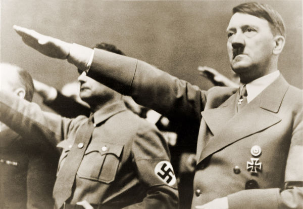

O nazismo, também conhecido como Partido Nacional-Socialista dos Trabalhadores Alemães, surgiu na Alemanha logo após a Primeira Guerra Mundial e alcançou grande notoriedade nos quadros políticos da Alemanha. Assumiu o poder do país a partir de 1933, quando Adolf Hitler tornou-se chanceler da Alemanha. Foi classificado pelos historiadores como um movimento da extrema-direita.
O nazismo foi o grande responsável pelo extermínio de seis milhões de judeus durante o Holocausto. Além dos judeus, outras minorias (como ciganos, homossexuais e negros) foram perseguidas e aprisionadas em campos de concentração. O nazismo também é conhecido por ter a suástica como seu grande símbolo.
Resumo
O nazismo, ou Partido Nacional-Socialista dos Trabalhadores Alemães, foi um partido da extrema-direita que surgiu na Alemanha em 1920. O partido surgiu escorado em ideais nacionalistas e extremistas que eram bastante difundidos na Alemanha desde o século XIX, entre os quais estavam o antissemitismo.
O surgimento do nazismo aconteceu logo após a Primeira Guerra Mundial em um momento em que a Alemanha estava arrasada e humilhada após esse conflito. A crise econômica e as duras imposições do Tratado de Versalhes fortaleceram o discurso nacionalista e extremista difundido por certas parcelas da sociedade alemã.
O nazismo possuía princípios como o antibolchevismo, antiliberalismo, antissemitismo, militarismo, exaltação da guerra etc. Assumiram o poder em 1933, quando Hitler foi nomeado primeiro-ministro da Alemanha. A partir desse momento, Hitler impôs uma série de mudanças no país, recuperando a economia e implantando uma ditadura totalitária que perseguia seus opositores.
A Alemanha caminhou para o seu fortalecimento militar e para o expansionismo territorial, e o resultado direto disso foi a guerra, iniciada em 1º de setembro de 1939, quando os alemães invadiram a Polônia. Ao final da Segunda Guerra Mundial, a Alemanha estava destruída, e o mundo, chocado com o horror do Holocausto, genocídio responsável pela morte de seis milhões de judeus.
Toda a bibliografia utilizada na elaboração desta publicação você encontra ao final do texto.
Origens do nazismo
As origens do nazismo estão primeiramente relacionadas com ideais extremistas que eram difundidos na sociedade alemã na virada do século XIX para o XX, como o nacionalismo extremado, exaltação da guerra como forma legítima de promover o desenvolvimento da nação, antissemitismo (aversão aos judeus), preconceito racial contra outras minorias, como os eslavos, etc.
A difusão desses ideais estava ligada ao darwinismo social (uma leitura incorreta da teoria da evolução das espécies de Charles Darwin), que defendia a ideia de que existiam povos biologicamente superiores. Dessa ideia nasceu o arianismo, que via o germânico (quem nasceu na Alemanha ou etnicamente descendente de alemães), cunhado como “nórdico” ou “ariano”, como naturalmente superior aos outros povos.
O antissemitismo também foi uma característica forte na Alemanha nesse período, mas não somente na Alemanha como em diferentes partes da Europa também. O antissemitismo encontrou eco em algumas personalidades alemãs, como Hermann Ahlwardt, Adolf Stöcker, Ernst Henrici, Wilhelm Marr etc.
Vale dizer que o nazismo também foi um fenômeno político que surgiu na Alemanha por causa das grandes mudanças que aconteceram após a derrota germânica na Primeira Guerra Mundial. Nas questões econômicas, a Alemanha sofreu duramente com o impacto da guerra, sobretudo por causa da pesada indenização que foi cobrada por britânicos, franceses e belgas.
Essa indenização foi uma parte do Tratado de Versalhes, que impôs outras sanções duríssimas à Alemanha, como a proibição de ter uma força militar superior a 100 mil homens e a perda de uma série de territórios (dentro do próprio território alemão e até colônias na África). As imposições do Tratado de Versalhes foram vistas como uma grande humilhação e arrastaram a Alemanha para uma crise econômica sem precedentes em sua história, o que abriu caminho para que partidos de extrema-direita ganhassem espaço na sociedade.
A sociedade alemã após a Primeira Guerra Mundial organizou-se em um sistema político liberal que ressaltava os valores de um sistema democrático representativo e que foi dominado pelo Partido Social-Democrata (o maior partido da Alemanha na década de 1920). Esse período da história alemã ficou conhecido como República de Weimar e estendeu-se de 1919 a 1933.
Esse período, no entanto, foi extremamente conturbado por causa das consequências da Primeira Guerra Mundial. A economia alemã entrou em colapso. A moeda do país sofreu desvalorização fortíssima (Hobsbawm fala que a moeda alemã em 1923 havia sido reduzida ao valor de um milionésimo de milhão do que valia em 1913)[4], e o desemprego alcançou 44% nos anos da Grande Depressão[5].
Além disso, parte da sociedade sentiu-se traída com uma derrota que era considerada impossível por grande parte da população. Isso gerou um grande ressentimento na sociedade alemã, o qual se aliou a uma forte nostalgia militarista que se espalhou pela Alemanha e propagou violência no país.
Nesse contexto de violência, radicalização da política e da sociedade, crise econômica, temor do comunismo soviético e ressentimento pela derrota, o nazismo encontrou espaço para surgir e crescer dentro dos quadros políticos da Alemanha.

O Partido Nacional-Socialista dos Trabalhadores Alemães (no alemão, Nationalsozialistische Deutsche Arbeiterpartei, ou apenas NSDAP) surgiu oficialmente em 1920 e era herdeiro do Partido dos Trabalhadores Alemães, do qual Adolf Hitler fazia parte. Hitler rapidamente ascendeu nos quadros desse partido e, em julho de 1921, já era líder e chamado de Führer (significa líder).
Adolf Hitler nasceu na Áustria em 1889 e, durante a Primeira Guerra Mundial, ingressou no exército do Império Alemão. Com o fim da guerra, Hitler juntou-se a grupos formados por ex-combatentes que defendiam a recuperação da Alemanha para que ela retomasse a prosperidade de outrora (havia uma nostalgia particular com o chamado Primeiro Reich, o Sacro Império Romano-Germânico, e com o Segundo Reich, o Império Alemão fundado por Otto von Bismarck).
Crescimento do nazismo
Ao longo da década de 1920, o nazismo foi ganhando força nos quadros políticos da Alemanha. Os membros do Partido Nazista organizavam-se como tropas militares extremamente disciplinadas e devidamente uniformizadas. Essas tropas tinham como ideia central a obediência cega e absoluta ao chefe do partido. Ao longo da década de 1920, realizaram passeatas como demonstração de força e atacavam adversários políticos.
Em 1923, os nazistas organizaram uma tentativa de golpe na Baviera (estado do sul da Alemanha). Essa tentativa de golpe, no entanto, foi fracassada, e muitos dos agitadores foram presos, inclusive Adolf Hitler. Durante o período em que esteve preso, Hitler escreveu o livro nomeado de Minha Luta (Mein Kampf), que organizou os preceitos básicos da ideologia nazista: antissemitismo, antiliberalismo, antibolchevismo, racismo, exaltação da guerra, nacionalismo extremado etc.
O crescimento do Partido Nazista explorou consideravelmente o desespero de grande parte da sociedade alemã com a crise econômica e política. Apesar de se autonomear como um partido que representava os trabalhadores (nesse sentido estamos nos referindo às classes operárias), o nazismo contou com grande apoio das classes médias da Alemanha. A partir de 1930, as classes altas do país aderiram ao partido em larga escala.
O crescimento e fortalecimento do nazismo na Alemanha ao longo da década de 1920, além de se apoiar na ótima capacidade retórica de Hitler, resultaram de uma estratégia criada no sentido de infiltrar membros do partido em diferentes locais da sociedade para fortalecer a difusão das ideias nas quais acreditavam.
A partir disso, o raio de ação do nazismo na Alemanha alcançava diferentes grupos, os quais aderiram ao discurso salvacionista de Hitler, que prometia reerguer a Alemanha ao patamar de potência novamente. Um dado interessante que reforça a adesão ao nazismo como fruto do desespero é que, durante os anos da Grande Depressão (1929-1933, principalmente), 85% dos membros do Partido Nazista estavam desempregados.
O fortalecimento do nazismo na Alemanha tornou Hitler uma figura conhecida da política alemã. Em 1932, foram realizadas eleições presidenciais no país. Hitler recebeu 36,8% dos votos e foi derrotado por Paul von Hindenburg, que contou com 53% dos votos. No entanto, no ano seguinte, Hindenburg, pressionado, viu-se obrigado a nomear Hitler ao cargo de chanceler da Alemanha, marcando o fim da República de Weimar.
Em 1934, Hindenburg faleceu, e Hitler acumulou os títulos de chanceler e presidente da Alemanha. Isso deu maiores poderes a Hitler, que concretizou a implantação de seu regime totalitário. Rapidamente, Hitler expurgou a política alemã e eliminou todas as possíveis ameaças ao seu poder.
Nos anos seguintes, além de ter eliminado seus adversários, seja na direita não radical, seja na esquerda, Hitler conseguiu recuperar a economia da Alemanha, iniciou o processo de militarização do país, desafiou os termos do Tratado de Versalhes, formou uma massa de seguidores fanáticos e iniciou o processo de expansão territorial do país. As ações de Hitler levaram a Alemanha para uma nova guerra.
Suástica
Após a sua fundação, o Partido Nazista transformou a cruz gamada, também conhecida como suástica, como seu símbolo. A suástica, que é um símbolo milenar, foi utilizada por diferentes povos com diferentes significados (como os hinduístas). No contexto da Alemanha, a suástica fazia referência à ideia do orgulho nacional germânico desde o século XIX. Muito provavelmente, por esse motivo, os nazistas transformaram-na em símbolo do partido.
Ideologia Nazista
A ideologia nazista é bastante complexa e ampla, abordando diferentes questões. Os grandes conceitos da ideologia nazista são:
Antissemitismo
Antibolchevismo
Racismo
Ação da guerra
Eugenia (ideal de purificação da raça)
Nacionalismo extremo
Desejo de expansão territorial
Desprezo pelas artes modernas, etc.
Consequências do Nazismo
Uma das maiores consequências e que, em geral, é atribuída aos nazistas foi o início da Segunda Guerra Mundial. Esse conflito, que se estendeu durante seis anos (1939-1945), iniciou-se por causa da política expansionista alemã sobre nações vizinhas. O estopim para o início do conflito foi a invasão da Polônia, realizada pelos alemães a partir de 1º de setembro de 1939. A Segunda Guerra foi responsável por aproximadamente 70 milhões de mortos.
Outra consequência foi a grande perseguição sobre os judeus nas décadas de 1930 e 1940. Após Hitler ocupar o poder da Alemanha em 1933, os nazistas iniciaram um processo de perseguição aos judeus, sobretudo a partir de 1935, quando foram aprovadas as Leis de Nuremberg (leis que amparavam juridicamente essa perseguição). Uma das consequências dessa perseguição aos judeus foi a construção de campos de concentração.
Holocausto
Holocausto
A perseguição aos judeus e a outras minorias promovida pelo nazismo ficou conhecida como Holocausto. Atualmente, sabe-se que 6 milhões de judeus foram mortos em consequência disso. Esse total correspondia a 2/3 dos judeus da Europa, pois, antes da guerra, a população judia no continente europeu era de 9 milhões de pessoas.